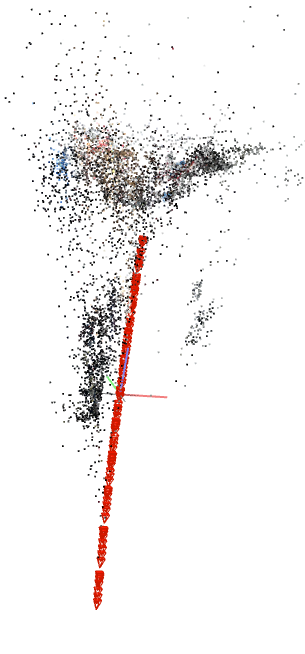

This project was inspired by the autonomous farming and
RC car with camera projects I worked on during my junior year.
I wanted to build something better than the RC car project that applied the things I learned in the autonomous farming project.
I learned about the Jetson Nano,
and how to install Ubuntu and ROS on it and I wanted to try to use it to make a robot. I also wanted to try to use a LIDAR and depth camera similar to what we did
in the farming project. The following are the tasks I wanted this new robot to do:
- Use mecanum wheels for omni-directional movement
- Be remote controlled with a Dualshock 4
- Use LIDAR and a depth camera to map its surroundings
- Have some sort of manipulator to interact with the world
The first major step was building the actual thing, which took a lot of time but thankfully I had some experience from the RC car project.
I still learned many new lessons along the way such as battery and motor selection, proper wiring and circuit design. While I was working on the
physical system, I was also setting up the Jetson Nano with ROS and the packages I needed for the LIDAR and controller so by the time I was done with
the prototype I was ready to make it move. After a couple of failed prototypes, I managed to build one that worked fine.

The robot I built being remote controlled with a Dualshock 4.
After getting the robot to work with the Dualshock 4 and the LIDAR, the next step was
to use the LIDAR data for mapping. Since I was using ROS already, I decided to try
the Hector SLAM package for ROS. After
some messing around I managed to make work on the robot.

Hector SLAM running on the robot.
Hector SLAM worked fine except that I was using it in a long hallway that did not have many
uniqure features, so it had trouble figuring out if it moved along the hallway or not.
To fix this issue I will need to do some sensor fusion with the depth camera.
That's where I left the project at, but I plan on coming back to it at some point to do the sensor fusion
and try Real-Time Appearance-Based Mapping
and add some sort of manipulator to make it interact with the environment.
This project was inspired by the my work in the Iris Lunar Rover teleoperations team
back in summer 2020. The pandemic was in full swing and the
CMU Robotics Institute Summer Scholars was held remotely, which meant I had to work on a software
based project instead of a hands-on one. Even though it was not necessary for my Iris work, I still wanted to
build an RC car with a camera to test out some computer vision software that we were planning on using
on the rover. Specifically, COLMAP and
ORB-SLAM2, both of which worked with a single camera (just like Iris).

The RC car I built, equipped with a Rasberry Pi 3, Arduino Nano, and webcam.
This was my first time making a project like this (I just finished my sophomore year at that time), but
it was a good learning experience on how to use the Rasberry Pi 3 remotely to control things. It worked
fine for moving and taking images that I could use to create a point cloud reconstruction of my apartment
using COLMAP.

The RC car running and taking images (left), COLMAP point cloud reconstructed from the images (center and right).
It ended up being pretty useful for testing COLMAP reconstruction from sparse image data, but I needed to do some
upgrades to make ORB-SLAM2 work on it. Thankfully, I was working on the autonomous farming
project at that time, so I knew exactly what I should do to make it work. I installed Ubuntu instead
of Raspberry Pi OS so I can install ROS on the Pi which would allow me to publish the webcam image
data using usb_cam so I can easily run ORB-SLAM2.
I also replaced the wheels with mecanum wheels to make navigation inside of the apartment easier, and
because I wanted to try them out.
The RC car moving with mecanum wheels (left), and ORB-SLAM2 running on it (right).
This project was a lot of fun and it helped me better understand Structure from Motion (SfM)
and Simultaneous Localization And Mapping (SLAM). This was my first attempt at building something
technical outside of class and I really enjoyed it, which is one of the reasons I decided to
make the remote controlled robot with LIDAR project.